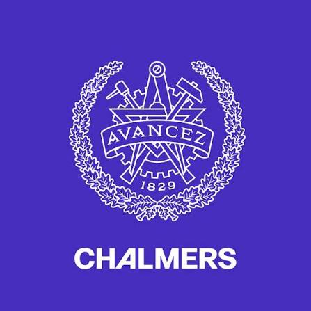

Working hours
Spot recurring overtime concerns that need investigation.
TEK830 · IKEA CHALLENGE 4 · VIETNAM
Clock It gives workers an optional way to share how work is going, and helps IKEA spot patterns that deserve a closer look.
Course prototype · Worker voice and responsible follow-up.
THE CHALLENGE
Workers can face long hours, safety concerns, delayed wages or unfair treatment. They need a safer way to raise concerns; teams need a clearer signal about where to follow up.
Spot recurring overtime concerns that need investigation.
Hear about safety issues closer to when they happen.
Surface concerns about pay, harassment or treatment.
A SMALL MOMENT, A BETTER SIGNAL
The concept adds a short feedback moment beside existing clock-out equipment. Participation is designed to be optional.
Clock out as usual. Feedback stays separate from identity checks.
Rate the shift and choose a concern category if you want to.
A compliance manager reviews patterns and tracks follow-up.
THE PROTOTYPE
Try the worker flow, then explore the manager overview.
Large touch targets and a short path to share a concern or leave without responding.
Open worker kiosk →Working hours
Safety
Fair treatment
Review patterns, open a case and consider responsible follow-up.
Open manager dashboard →DESIGN THINKING
How Clock It addresses worker needs, integrates with factory equipment, and supports IKEA's social sustainability goals.
Our primary user is Maria, the Sustainability and Compliance Manager responsible for Vietnam, who needs unified digital access to worker feedback across supplier sites to spot patterns missed by scheduled audits. Secondary users include factory workers at supplier and subcontractor sites, IKEA purchasing teams, and supplier managers.
Research through open-ended interviews with contacts in Vietnam, surveys, and public worker discussions highlighted fear of retaliation and language/literacy barriers. Clock It addresses this via voluntary participation at clock-out, a minimal UI with smiley ratings, simple Vietnamese text, large touch targets, audio guidance, and a support hotline.
The current prototype uses HTML, CSS, and JavaScript. Because existing factory fingerprint scanners cannot run modern interactive software, the full concept uses low-cost, refurbished, locked-down companion tablets installed beside fingerprint terminals at factory exits.
The system pairs anonymized clock-in/out logs (to verify working hours without storing biometric fingerprint data) with optional touchscreen reports sent to secure cloud storage via standardized APIs. To protect privacy and prevent tampering, independent partners handle installation, suppliers are restricted from accessing raw data, and cases cannot be deleted to hide metrics. A 1–2 factory pilot in Vietnam with local labor experts will validate legal and operational requirements.
Clock It extends IKEA's vision of "creating a better everyday life for the many people" to supply chain workers while reinforcing values of caring for people, taking responsibility, and continuous improvement. It complements top-down audits with continuous bottom-up insight.
Compliance managers review aggregated risk tiers and track corrective actions, while purchasing teams evaluate whether order changes or tight deadlines drive overtime. Expected value includes reduced supply chain disruption (e.g., strikes), lower travel emissions from fewer emergency physical audits, and stronger due diligence—evaluated via engagement rates, case review times, and recurring issue trends.
SUSTAINABILITY BY DESIGN
The intended value is social first. Digital tools also use energy and hardware, so those effects belong in the design.
Optional feedback gives workers another route to share concerns.
INDIVIDUAL · SOCIALAggregated patterns can help teams investigate concerns and responses.
SOCIAL · ECONOMIC · TECHNICALRepeated follow-up may support stronger due diligence.
SOCIAL · ECONOMICA drop in reports alone does not prove conditions improved. Read it alongside participation, trust and documented action.
♻ Prefer refurbished tablets, low-energy settings, short retention and simple infrastructure. These are intentions, not measured savings.
Evaluation of immediate, enabling, and structural effects across the five dimensions of the Sustainable Requirements Framework.
| Dimension and topics | Immediate effects | Enabling effects | Structural effects |
|---|---|---|---|
| IndividualHealth, lifelong learning, privacy, safety, agency | Helpful: Workers gain direct agency to report safety, wage, or overtime issues anonymously at clock-out without confronting factory management. Risk: Potential fear of surveillance if workers think fingerprint scanners link to their answers. |
Helpful: Workers see their input lead to workplace improvements, fostering inclusion and learning. Compliance and supplier managers learn where recurring hazards occur. | Helpful: Sustained safer working environments, fair pay, and strengthened worker self-determination across supplier factories. |
| SocialCommunity, trust, inclusiveness, equity, participation | Helpful: Equal, accessible voice for all shift workers via simple Vietnamese, audio guidance, and large touchpads. | Helpful: Replaces slow, top-down annual audits with continuous bottom-up daily communication. Strengthens trust between IKEA and the workforce through accountability. | Helpful/Tension: Promotes a fair, equitable supply chain. Unethical suppliers may face penalties ("losers"), while IKEA and suppliers can collaborate to adjust unrealistic production quotas that cause forced overtime. |
| EnvironmentalMaterials, resources, waste, pollution, energy, biodiversity, logistics | Harmful (Mitigated): Consumes hardware materials and electricity for companion tablets and cloud servers; mitigated by sourcing refurbished tablets, low-energy screen settings, and avoiding compute-heavy generative AI/LLMs. | Helpful: Digital collection eliminates paper-based worker surveys and reduces CO₂ emissions from frequent physical travel to collect baseline compliance data. | Helpful: Embeds low-impact circular hardware practices (refurbishing and end-of-life recycling) into operational compliance tools without driving consumer materialism. |
| EconomicValue, CRM, supply chains, governance, innovation | Harmful (Low): Upfront capital and operational costs for software development, cloud hosting, and procuring/maintaining refurbished tablets. | Helpful: Reduces on-site auditing expenses, groups suppliers into risk tiers, and links worker signals to purchasing decisions and corrective action histories. | Helpful: Prevents costly supply chain disruptions (such as factory strikes), avoids regulatory fines and brand damage, and secures long-term contracts for compliant suppliers. |
| TechnicalMaintainability, usability, adaptability, security, scalability | Helpful: Simple, modular web UI decoupled from legacy fingerprint hardware, minimizing immediate complexity for workers and maintainers. | Risk: Technical debt and scaling challenges when integrating across diverse supplier clock-in systems, plus cybersecurity threats to sensitive worker logs. | Helpful: Standardized APIs, strict data retention limits, and annual question reviews enable long-term adaptability and portability across global supply chains. |
Trade-offs, unintended effects, and mitigations: The primary trade-off balances worker transparency against the risk of supplier retaliation or coerced positive responses, which would waste hardware/energy resources and create a false sense of security. We mitigate this by keeping participation strictly optional, prohibiting supplier access to raw data, separating identity checks from feedback storage, and deploying via independent partners during IKEA audits. Environmentally, adding physical kiosks increases hardware demand, which is mitigated by procuring refurbished tablets, applying low-power settings, setting data retention limits, and avoiding energy-intensive LLMs.
Connect immediate, enabling and structural effects across all five dimensions.
Plot the identified effects by likelihood and sustainability impact.
RESEARCH AND DEVELOPMENT JOURNEY
How desk research, surveys, and interviews shaped our understanding of the Vietnamese factory context.
Recognizing early on that our team lacked direct insight into the lived perspective of Vietnamese factory workers, we reached out to contacts in Vietnam to conduct open-ended interviews. We complemented these qualitative conversations with broader surveys and desk research analyzing public worker discussions on Reddit and supply chain compliance literature.
All insights were gathered anonymously to respect participant privacy. Because our team is based in Sweden and could not conduct on-site factory floor observations in Vietnam during the course timeframe, direct usability testing with on-shift factory workers remains a key next step for a local pilot.
Finding 1 (Fear of retaliation): Workers hesitate to report excessive overtime, wage delays, or harassment if they must approach local management or fear being identified—confirming the need for anonymous, third-party-managed reporting separated from identity records.
Finding 2 (Hardware & accessibility barriers): Existing factory fingerprint scanners cannot run modern interactive software, and workers have varying literacy levels and minimal time at shift changes—requiring dedicated companion tablets with simple Vietnamese, smiley icons, audio guidance, and a hotline.
Finding 3 (Limits of scheduled audits): Occasional on-site audits and supplier self-reports often miss day-to-day overtime spikes caused by sudden order changes—showing that compliance managers need continuous, aggregated worker signals alongside purchasing context.
Research finding → Design decision: Learning that fingerprint terminals are hardware-constrained yet used daily by every worker led us to design a companion kiosk placed right beside the clock-out scanner, triggered for a random selection of clocking-out employees.
Rejected alternatives & next steps: We rejected personal smartphone apps (due to unequal device access and tracking fears) and heavy AI/LLM text analysis (to avoid unnecessary energy consumption and complexity), opting instead for structured categories (Overtime, Safety, Wages, Harassment, Other). Next, we propose a 1–2 factory pilot in Vietnam with local labor experts.
Started with the goal of giving IKEA compliance managers better visibility into Vietnam supplier working conditions beyond scheduled annual audits, initially assuming feedback could be integrated directly into existing clock-in terminals.
After open-ended interviews with Vietnamese contacts, surveys, and technical feasibility checks, we shifted to locked-down refurbished companion tablets beside fingerprint scanners, adding a fast smiley-face prompt, simple Vietnamese, and strict anonymization so positive clicks submit immediately while negative/neutral ratings open quick Yes/No issue flags.
Built interactive prototypes for both the worker kiosk and Maria's compliance dashboard. Future validation requires partnering with local Vietnamese labor experts and running a small pilot across 1–2 supplier factories to verify worker trust and API integration.
01 Can workers trust that feedback cannot be traced to them?
02 Which languages and assistance make the kiosk accessible?
03 Who reviews a concern, and what remedy follows?
THE TEAM
TEK830 · Sustainable Digitalization in Practice · Chalmers University of Technology

TEK830 · Sustainable Digitalization in Practice
Pontus Gustafsson — Team 4 Representative (pontg@chalmers.se)
Hugo Dörrich — Team 4 Representative (hugodor@chalmers.se)
For enquiries regarding the Clock It prototype and TEK830 Challenge 4 (Vietnam), please reach out to our team representatives above.
SOURCES AND REFERENCES
Add the materials consulted so far and connect them to the claims and decisions they support.